Kagome Lattice
Preamble
using TightBindingLattice
using LinearAlgebra
using Printf
using Plots
simplifyname(s::AbstractString) = (
s |> (x-> replace(x, r"<sup>(.+?)</sup>" => s"\1"))
|> (x-> replace(x, r"<sub>(.+?)</sub>" => s"[\1]"))
)
mkpath("example_kagome_symmetry")
extent = [-2, 2, -2, 2]
within(r) = (extent[1] <= r[1] <= extent[2] && extent[3] <= r[2] <= extent[4])within (generic function with 1 method)
Generate Kagome Lattice
function make_kagome_lattice(size_matrix ::AbstractMatrix{<:Integer})
latticevectors = [1 -0.5; 0 0.5*sqrt(3.0)];
unitcell = makeunitcell(latticevectors, SiteType=String)
addsite!(unitcell, "A", carte2fract(unitcell, [0.5, 0.0]))
addsite!(unitcell, "B", carte2fract(unitcell, [0.25, 0.25*sqrt(3.0)]))
addsite!(unitcell, "C", carte2fract(unitcell, [0.5+0.25, 0.25*sqrt(3.0)]))
nnbondtypes = [
([ 0, 0], "A", [ 0, 0], "B", 1),
([ 0, 0], "A", [ 0, 0], "C", 1),
([ 0, 0], "B", [ 0, 0], "C", 1),
([ 1, 1], "A", [ 1, 0], "B",-1),
([ 1, 0], "B", [ 0, 0], "C",-1),
([ 0, 0], "C", [ 1, 1], "A",-1),
]
nnnbondtypes = [
([ 0, 0], "A", [ 1, 0], "B", 1), # ◁
([ 1, 0], "B", [ 0,-1], "C", 1),
([ 0,-1], "C", [ 0, 0], "A", 1),
([ 0, 0], "C", [ 1, 0], "A",-1),
([ 1, 0], "A", [ 0,-1], "B",-1), # ▷
([ 0,-1], "B", [ 0, 0], "C",-1),
]
lattice = makelattice(unitcell, size_matrix)
orthocube = lattice.orthocube
supercell = lattice.supercell
tsym = TranslationSymmetry(lattice)
psym = little_symmetry(tsym, project(PointSymmetryDatabase.get(25), [1 0 0; 0 1 0]))
tsymbed = embed(lattice, tsym)
psymbed = embed(lattice, psym)
ssymbed = tsymbed ⋊ psymbed
nnbonds = []
nnnbonds = []
for r in lattice.bravais_coordinates
for (rowvec, roworb, colvec, colorb, bondsign) in nnbondtypes
R_row, r_row = orthocube.wrap(r .+ rowvec)
R_col, r_col = orthocube.wrap(r .+ colvec)
roworb_super = (roworb, r_row)
colorb_super = (colorb, r_col)
irow = get(supercell.siteindices, roworb_super, -1)
icol = get(supercell.siteindices, colorb_super, -1)
push!(nnbonds, ((irow, icol), R_col-R_row, bondsign))
end
for (rowvec, roworb, colvec, colorb, bondsign) in nnnbondtypes
R_row, r_row = orthocube.wrap(r .+ rowvec)
R_col, r_col = orthocube.wrap(r .+ colvec)
roworb_super = (roworb, r_row)
colorb_super = (colorb, r_col)
irow = get(supercell.siteindices, roworb_super, -1)
icol = get(supercell.siteindices, colorb_super, -1)
push!(nnnbonds, ((irow, icol), R_col-R_row, bondsign))
end
end
nn_triangles = []
for r in lattice.bravais_coordinates
triangle = []
for (rowvec, roworb, colvec, colorb, bondsign) in nnbondtypes[1:3]
R_row, r_row = orthocube.wrap(r .+ rowvec)
R_col, r_col = orthocube.wrap(r .+ colvec)
roworb_super = (roworb, r_row)
colorb_super = (colorb, r_col)
irow = get(supercell.siteindices, roworb_super, -1)
icol = get(supercell.siteindices, colorb_super, -1)
push!(triangle, ((irow, icol), R_col-R_row))
end
push!(nn_triangles, (triangle, 1))
triangle = []
for (rowvec, roworb, colvec, colorb, bondsign) in nnbondtypes[4:6]
R_row, r_row = orthocube.wrap(r .+ rowvec)
R_col, r_col = orthocube.wrap(r .+ colvec)
roworb_super = (roworb, r_row)
colorb_super = (colorb, r_col)
irow = get(supercell.siteindices, roworb_super, -1)
icol = get(supercell.siteindices, colorb_super, -1)
push!(triangle, ((irow, icol), R_col-R_row))
end
push!(nn_triangles, (triangle, -1))
end
return (unitcell=unitcell,
lattice=lattice,
space_symmetry_embedding=ssymbed,
nearest_neighbor_bonds=nnbonds,
next_nearest_neighbor_bonds=nnnbonds,
nearest_neighbor_triangles=nn_triangles)
endmake_kagome_lattice (generic function with 1 method)
Symmetry Analysis
kagome = make_kagome_lattice([4 -2; 2 2])
tsymbed = kagome.space_symmetry_embedding.normal
psymbed = kagome.space_symmetry_embedding.rest
tsym = symmetry(tsymbed)
psym = symmetry(psymbed)
println("Point Symmetry")
println("==============")
println()
println("Point group: ", psym.hermann_mauguin)
println("Number of elements: ", group_order(psym))
println("Number of irreps: ", num_irreps(psym))Point Symmetry ============== Point group: 6mm Number of elements: 12 Number of irreps: 6
Site Map
site_map = findsitemap(kagome.lattice.unitcell, psym)
println("Site map")
println("-----------")
println()
for (n, map) in zip(element_names(psym), site_map)
@printf("%32s:", n)
for (i_elem, (j_elem, R)) in enumerate(map)
@printf(" %d ↦ %d, %-8s", i_elem, j_elem, string(R))
end
println()
end
println()Site map
-----------
1: 1 ↦ 1, [0, 0] 2 ↦ 2, [0, 0] 3 ↦ 3, [0, 0]
3<sup>+</sup><sub>001</sub>: 1 ↦ 3, [-1, 0] 2 ↦ 1, [-1, 0] 3 ↦ 2, [-1, 0]
3<sup>-</sup><sub>001</sub>: 1 ↦ 2, [-1, -1] 2 ↦ 3, [-1, -1] 3 ↦ 1, [-1, -1]
2<sub>001</sub>: 1 ↦ 1, [-1, 0] 2 ↦ 2, [-1, -1] 3 ↦ 3, [-2, -1]
6<sup>-</sup><sub>001</sub>: 1 ↦ 3, [-1, -1] 2 ↦ 1, [0, 0] 3 ↦ 2, [0, -1]
6<sup>+</sup><sub>001</sub>: 1 ↦ 2, [0, 0] 2 ↦ 3, [-1, 0] 3 ↦ 1, [0, 1]
m<sub>110</sub>: 1 ↦ 3, [-1, -1] 2 ↦ 2, [-1, -1] 3 ↦ 1, [-1, -1]
m<sub>100</sub>: 1 ↦ 1, [-1, 0] 2 ↦ 3, [-1, 0] 3 ↦ 2, [-1, 0]
m<sub>010</sub>: 1 ↦ 2, [0, 0] 2 ↦ 1, [0, 0] 3 ↦ 3, [0, 0]
m<sub>1-10</sub>: 1 ↦ 3, [-1, 0] 2 ↦ 2, [0, 0] 3 ↦ 1, [0, 1]
m<sub>120</sub>: 1 ↦ 1, [0, 0] 2 ↦ 3, [-1, -1] 3 ↦ 2, [0, -1]
m<sub>210</sub>: 1 ↦ 2, [-1, -1] 2 ↦ 1, [-1, 0] 3 ↦ 3, [-2, -1]Plot Translation Symmetry
for (i_elem, perm) in enumerate(elements(tsymbed))
elname = element_name(tsym, i_elem)
fig = plot(title=elname, aspect=1, size=(200, 200), grid=false, titlefont=Plots.font("sans-serif", pointsize=8))
orbcoords = []
orbnames = []
for iorb in eachindex(kagome.lattice.supercell.sites)
orbfc = getsitecoord(kagome.lattice.supercell, perm(iorb))
orbcc = fract2carte(kagome.lattice.supercell, orbfc)
push!(orbnames, "$iorb")
push!(orbcoords, orbcc)
end
orbcoords = hcat(orbcoords...)
L = kagome.lattice.supercell.latticevectors
for R1 in -2:2, R2 in -2:2
R = [R1, R2]
LR = L * R
idx_filt = [i for (i, r) in enumerate(eachcol(orbcoords)) if within(r .+ LR)]
scatter!(orbcoords[1,idx_filt] .+ LR[1],
orbcoords[2,idx_filt] .+ LR[2],
color="blue",
markerstrokecolor="blue",
series_annotations=[Plots.text(x, 6, :left, :bottom) for x in orbnames[idx_filt]], label=nothing)
end
xlims!(extent[1], extent[2])
ylims!(extent[3], extent[4])
savefig(fig, "example_kagome_symmetry/translation_symmetry-$i_elem.svg")
end/home/travis/.julia/packages/GR/8mv9N/src/../deps/gr/bin/gksqt: error while loading shared libraries: libQt5Widgets.so.5: cannot open shared object file: No such file or directory connect: Connection refused GKS: can't connect to GKS socket application GKS: Open failed in routine OPEN_WS GKS: GKS not in proper state. GKS must be either in the state WSOP or WSAC in routine ACTIVATE_WS /home/travis/.julia/packages/GR/8mv9N/src/../deps/gr/bin/gksqt: error while loading shared libraries: libQt5Widgets.so.5: cannot open shared object file: No such file or directory connect: Connection refused GKS: can't connect to GKS socket application GKS: Open failed in routine OPEN_WS GKS: GKS not in proper state. GKS must be either in the state WSOP or WSAC in routine ACTIVATE_WS /home/travis/.julia/packages/GR/8mv9N/src/../deps/gr/bin/gksqt: error while loading shared libraries: libQt5Widgets.so.5: cannot open shared object file: No such file or directory connect: Connection refused GKS: can't connect to GKS socket application GKS: Open failed in routine OPEN_WS GKS: GKS not in proper state. GKS must be either in the state WSOP or WSAC in routine ACTIVATE_WS /home/travis/.julia/packages/GR/8mv9N/src/../deps/gr/bin/gksqt: error while loading shared libraries: libQt5Widgets.so.5: cannot open shared object file: No such file or directory connect: Connection refused GKS: can't connect to GKS socket application GKS: Open failed in routine OPEN_WS GKS: GKS not in proper state. GKS must be either in the state WSOP or WSAC in routine ACTIVATE_WS /home/travis/.julia/packages/GR/8mv9N/src/../deps/gr/bin/gksqt: error while loading shared libraries: libQt5Widgets.so.5: cannot open shared object file: No such file or directory connect: Connection refused GKS: can't connect to GKS socket application GKS: Open failed in routine OPEN_WS GKS: GKS not in proper state. GKS must be either in the state WSOP or WSAC in routine ACTIVATE_WS /home/travis/.julia/packages/GR/8mv9N/src/../deps/gr/bin/gksqt: error while loading shared libraries: libQt5Widgets.so.5: cannot open shared object file: No such file or directory connect: Connection refused GKS: can't connect to GKS socket application GKS: Open failed in routine OPEN_WS GKS: GKS not in proper state. GKS must be either in the state WSOP or WSAC in routine ACTIVATE_WS /home/travis/.julia/packages/GR/8mv9N/src/../deps/gr/bin/gksqt: error while loading shared libraries: libQt5Widgets.so.5: cannot open shared object file: No such file or directory connect: Connection refused GKS: can't connect to GKS socket application GKS: Open failed in routine OPEN_WS GKS: GKS not in proper state. GKS must be either in the state WSOP or WSAC in routine ACTIVATE_WS /home/travis/.julia/packages/GR/8mv9N/src/../deps/gr/bin/gksqt: error while loading shared libraries: libQt5Widgets.so.5: cannot open shared object file: No such file or directory connect: Connection refused GKS: can't connect to GKS socket application GKS: Open failed in routine OPEN_WS GKS: GKS not in proper state. GKS must be either in the state WSOP or WSAC in routine ACTIVATE_WS /home/travis/.julia/packages/GR/8mv9N/src/../deps/gr/bin/gksqt: error while loading shared libraries: libQt5Widgets.so.5: cannot open shared object file: No such file or directory connect: Connection refused GKS: can't connect to GKS socket application GKS: Open failed in routine OPEN_WS GKS: GKS not in proper state. GKS must be either in the state WSOP or WSAC in routine ACTIVATE_WS /home/travis/.julia/packages/GR/8mv9N/src/../deps/gr/bin/gksqt: error while loading shared libraries: libQt5Widgets.so.5: cannot open shared object file: No such file or directory connect: Connection refused GKS: can't connect to GKS socket application GKS: Open failed in routine OPEN_WS GKS: GKS not in proper state. GKS must be either in the state WSOP or WSAC in routine ACTIVATE_WS /home/travis/.julia/packages/GR/8mv9N/src/../deps/gr/bin/gksqt: error while loading shared libraries: libQt5Widgets.so.5: cannot open shared object file: No such file or directory connect: Connection refused GKS: can't connect to GKS socket application GKS: Open failed in routine OPEN_WS GKS: GKS not in proper state. GKS must be either in the state WSOP or WSAC in routine ACTIVATE_WS /home/travis/.julia/packages/GR/8mv9N/src/../deps/gr/bin/gksqt: error while loading shared libraries: libQt5Widgets.so.5: cannot open shared object file: No such file or directory connect: Connection refused GKS: can't connect to GKS socket application GKS: Open failed in routine OPEN_WS GKS: GKS not in proper state. GKS must be either in the state WSOP or WSAC in routine ACTIVATE_WS
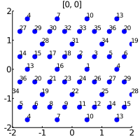  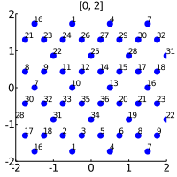 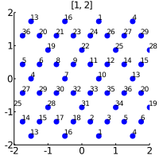 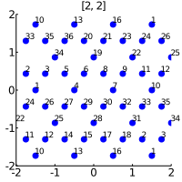 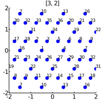 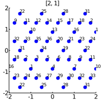 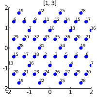 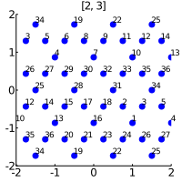 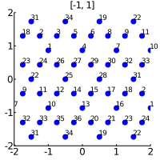 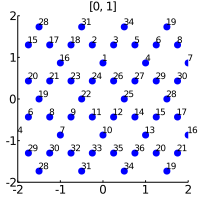 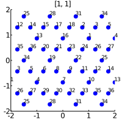
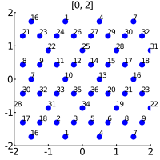 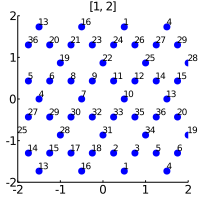 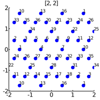 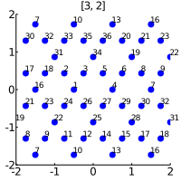 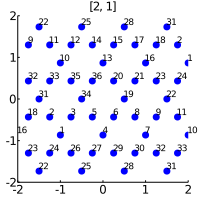 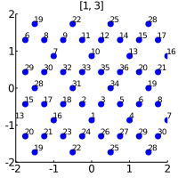 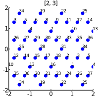 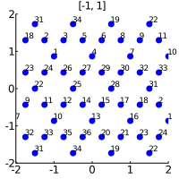 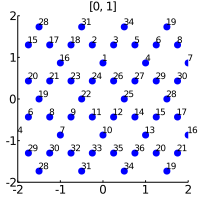 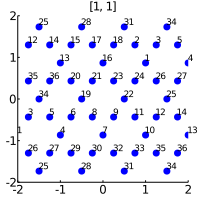
Plot Point Symmetry
for (i_elem, perm) in enumerate(elements(psymbed))
elname = element_name(psym, i_elem)
fig = plot(title=simplifyname(elname), aspect=1, size=(200, 200), grid=false, titlefont=Plots.font("sans-serif", pointsize=8))
orbcoords = []
orbnames = []
for iorb in eachindex(kagome.lattice.supercell.sites)
orbfc = getsitecoord(kagome.lattice.supercell, perm(iorb))
orbcc = fract2carte(kagome.lattice.supercell, orbfc)
push!(orbnames, "$iorb")
push!(orbcoords, orbcc)
end
orbcoords = hcat(orbcoords...)
L = kagome.lattice.supercell.latticevectors
for R1 in -2:2, R2 in -2:2
R = [R1, R2]
LR = L * R
idx_filt = [i for (i, r) in enumerate(eachcol(orbcoords)) if within(r .+ LR)]
scatter!(orbcoords[1,idx_filt] .+ LR[1],
orbcoords[2,idx_filt] .+ LR[2],
color="blue",
markerstrokecolor="blue",
series_annotations=[Plots.text(x, 6, :left, :bottom) for x in orbnames[idx_filt]], label=nothing)
end
xlims!(extent[1], extent[2])
ylims!(extent[3], extent[4])
savefig(fig, "example_kagome_symmetry/point_symmetry-$i_elem.svg")
end/home/travis/.julia/packages/GR/8mv9N/src/../deps/gr/bin/gksqt: error while loading shared libraries: libQt5Widgets.so.5: cannot open shared object file: No such file or directory connect: Connection refused GKS: can't connect to GKS socket application GKS: Open failed in routine OPEN_WS GKS: GKS not in proper state. GKS must be either in the state WSOP or WSAC in routine ACTIVATE_WS /home/travis/.julia/packages/GR/8mv9N/src/../deps/gr/bin/gksqt: error while loading shared libraries: libQt5Widgets.so.5: cannot open shared object file: No such file or directory connect: Connection refused GKS: can't connect to GKS socket application GKS: Open failed in routine OPEN_WS GKS: GKS not in proper state. GKS must be either in the state WSOP or WSAC in routine ACTIVATE_WS /home/travis/.julia/packages/GR/8mv9N/src/../deps/gr/bin/gksqt: error while loading shared libraries: libQt5Widgets.so.5: cannot open shared object file: No such file or directory connect: Connection refused GKS: can't connect to GKS socket application GKS: Open failed in routine OPEN_WS GKS: GKS not in proper state. GKS must be either in the state WSOP or WSAC in routine ACTIVATE_WS /home/travis/.julia/packages/GR/8mv9N/src/../deps/gr/bin/gksqt: error while loading shared libraries: libQt5Widgets.so.5: cannot open shared object file: No such file or directory connect: Connection refused GKS: can't connect to GKS socket application GKS: Open failed in routine OPEN_WS GKS: GKS not in proper state. GKS must be either in the state WSOP or WSAC in routine ACTIVATE_WS /home/travis/.julia/packages/GR/8mv9N/src/../deps/gr/bin/gksqt: error while loading shared libraries: libQt5Widgets.so.5: cannot open shared object file: No such file or directory connect: Connection refused GKS: can't connect to GKS socket application GKS: Open failed in routine OPEN_WS GKS: GKS not in proper state. GKS must be either in the state WSOP or WSAC in routine ACTIVATE_WS /home/travis/.julia/packages/GR/8mv9N/src/../deps/gr/bin/gksqt: error while loading shared libraries: libQt5Widgets.so.5: cannot open shared object file: No such file or directory connect: Connection refused GKS: can't connect to GKS socket application GKS: Open failed in routine OPEN_WS GKS: GKS not in proper state. GKS must be either in the state WSOP or WSAC in routine ACTIVATE_WS /home/travis/.julia/packages/GR/8mv9N/src/../deps/gr/bin/gksqt: error while loading shared libraries: libQt5Widgets.so.5: cannot open shared object file: No such file or directory connect: Connection refused GKS: can't connect to GKS socket application GKS: Open failed in routine OPEN_WS GKS: GKS not in proper state. GKS must be either in the state WSOP or WSAC in routine ACTIVATE_WS /home/travis/.julia/packages/GR/8mv9N/src/../deps/gr/bin/gksqt: error while loading shared libraries: libQt5Widgets.so.5: cannot open shared object file: No such file or directory connect: Connection refused GKS: can't connect to GKS socket application GKS: Open failed in routine OPEN_WS GKS: GKS not in proper state. GKS must be either in the state WSOP or WSAC in routine ACTIVATE_WS /home/travis/.julia/packages/GR/8mv9N/src/../deps/gr/bin/gksqt: error while loading shared libraries: libQt5Widgets.so.5: cannot open shared object file: No such file or directory connect: Connection refused GKS: can't connect to GKS socket application GKS: Open failed in routine OPEN_WS GKS: GKS not in proper state. GKS must be either in the state WSOP or WSAC in routine ACTIVATE_WS /home/travis/.julia/packages/GR/8mv9N/src/../deps/gr/bin/gksqt: error while loading shared libraries: libQt5Widgets.so.5: cannot open shared object file: No such file or directory connect: Connection refused GKS: can't connect to GKS socket application GKS: Open failed in routine OPEN_WS GKS: GKS not in proper state. GKS must be either in the state WSOP or WSAC in routine ACTIVATE_WS /home/travis/.julia/packages/GR/8mv9N/src/../deps/gr/bin/gksqt: error while loading shared libraries: libQt5Widgets.so.5: cannot open shared object file: No such file or directory connect: Connection refused GKS: can't connect to GKS socket application GKS: Open failed in routine OPEN_WS GKS: GKS not in proper state. GKS must be either in the state WSOP or WSAC in routine ACTIVATE_WS /home/travis/.julia/packages/GR/8mv9N/src/../deps/gr/bin/gksqt: error while loading shared libraries: libQt5Widgets.so.5: cannot open shared object file: No such file or directory connect: Connection refused GKS: can't connect to GKS socket application GKS: Open failed in routine OPEN_WS GKS: GKS not in proper state. GKS must be either in the state WSOP or WSAC in routine ACTIVATE_WS
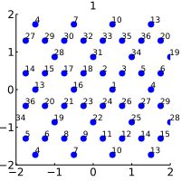 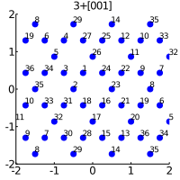 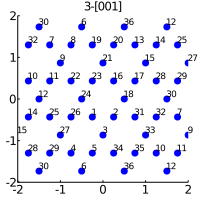 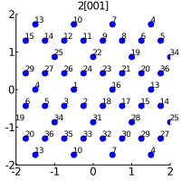 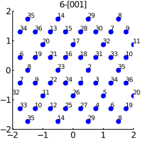 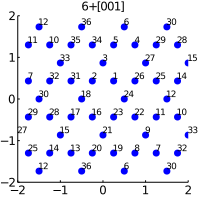 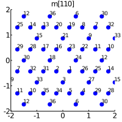 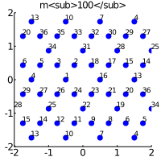 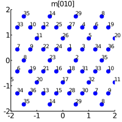 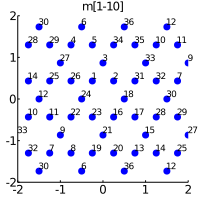 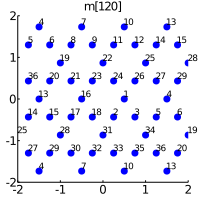 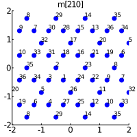
This page was generated using Literate.jl.